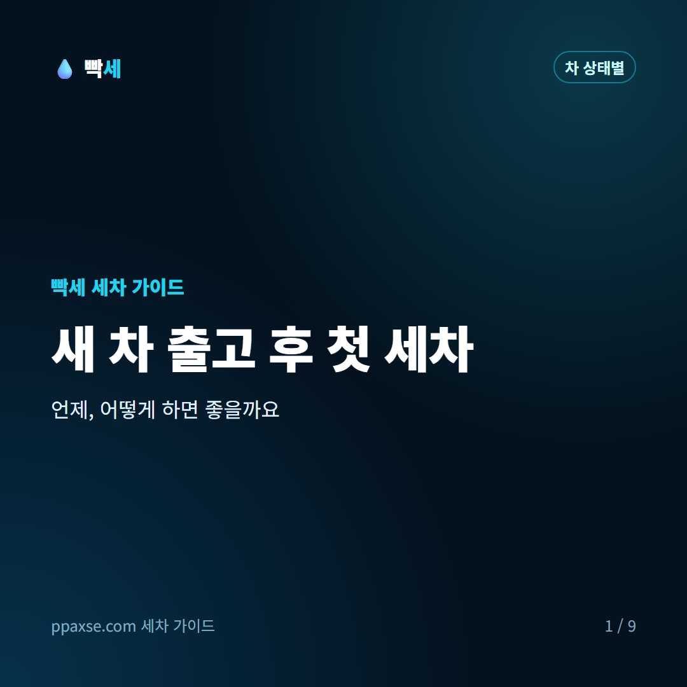
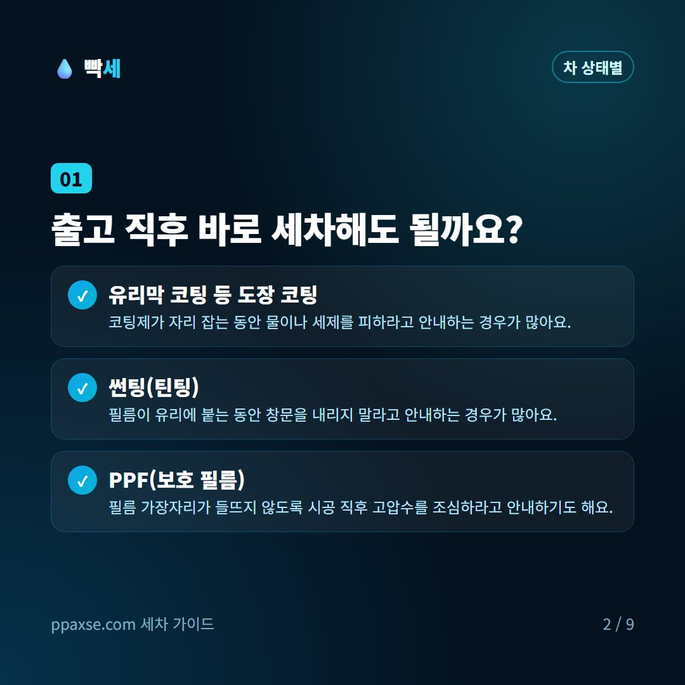
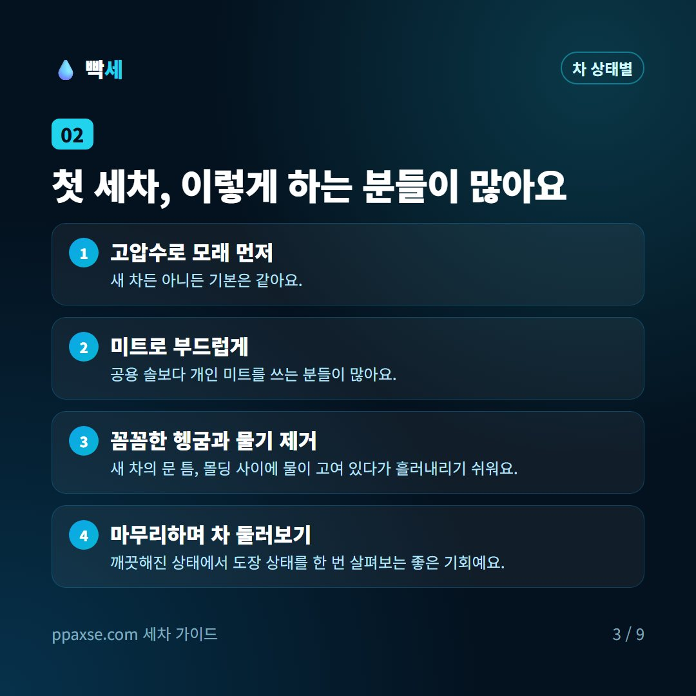
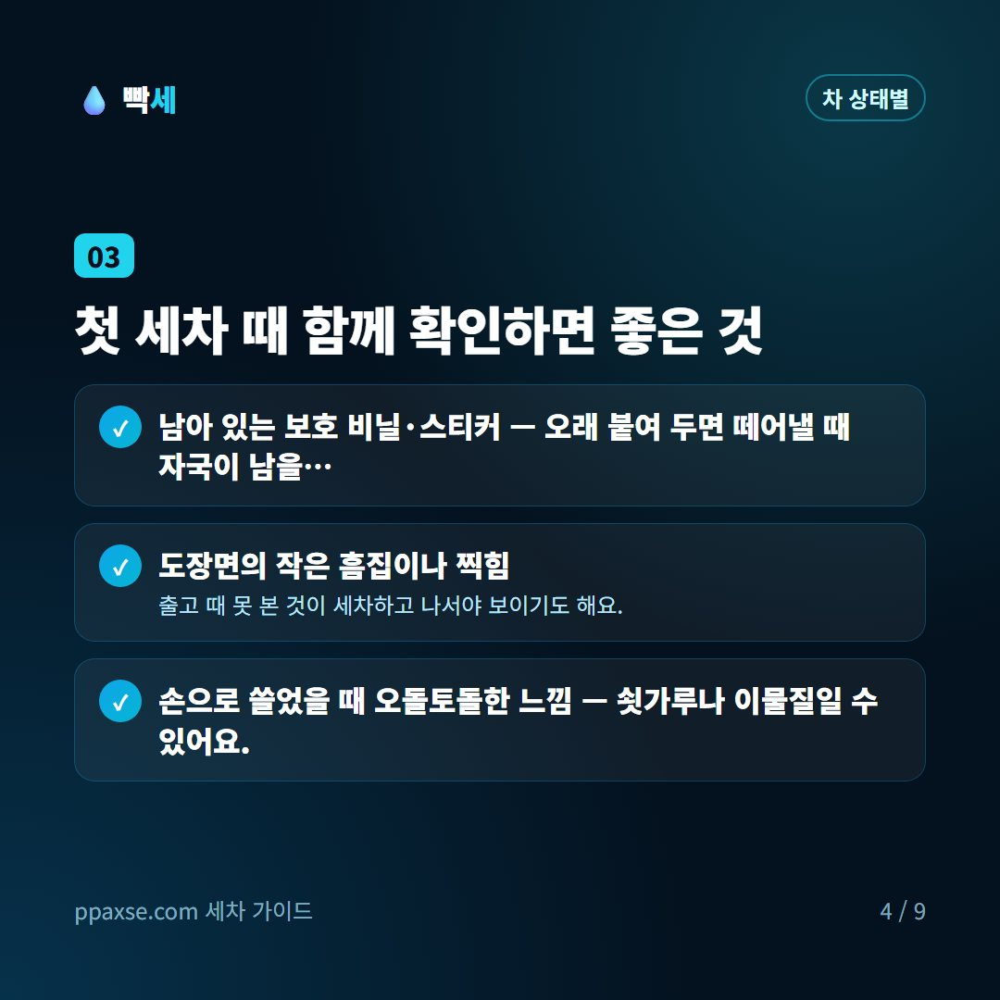
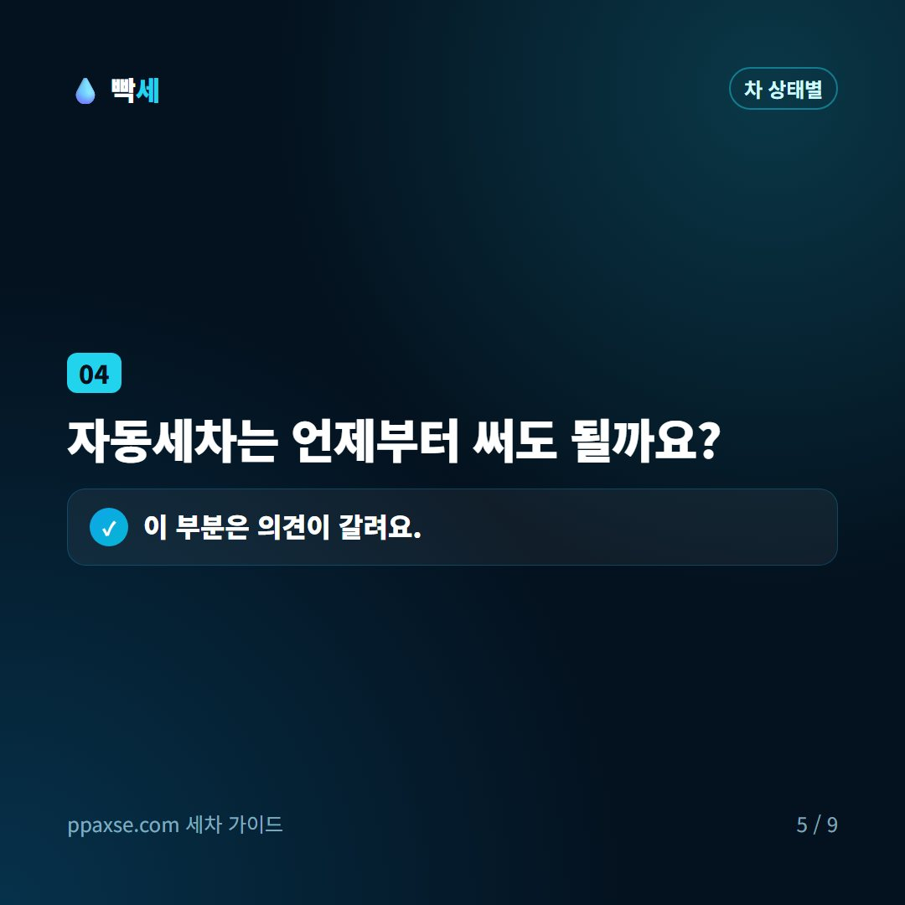
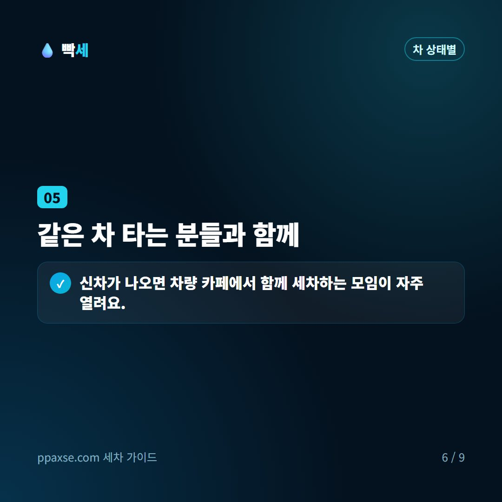

새 차 출고 후 첫 세차 — 언제, 어떻게 하면 좋을까요
새 차를 받으면 첫 세차부터 조심스러워져요. "언제 해도 되지?", "자동세차 돌려도 되나?", "코팅했는데 물 닿아도 되나?" 같은 질문이 차량 카페에 자주 올라와요. 결론부터 말하면 시공한 게 있다면 시공점 안내를 먼저 따르고, 그다음부터는 처음 습관을 잘 들이는 것이 중요해요.

출고 직후 바로 세차해도 될까요?

아무 시공도 하지 않았다면 바로 세차해도 괜찮다는 분들이 많아요. 새 차라도 출고 전 보관과 운송 과정에서 먼지, 비 자국, 작은 쇳가루 같은 게 붙어 있을 수 있어서 첫 세차를 일찍 하는 분들도 있어요.
다만 아래 작업을 했다면 이야기가 달라져요.
- 유리막 코팅 등 도장 코팅 — 코팅제가 자리 잡는 동안 물이나 세제를 피하라고 안내하는 경우가 많아요. 기간은 제품과 시공점마다 달라요.
- 썬팅(틴팅) — 필름이 유리에 붙는 동안 창문을 내리지 말라고 안내하는 경우가 많아요. 세차할 때도 창문 가장자리에 고압수를 직접 쏘지 않는 게 좋아요.
- PPF(보호 필름) — 필름 가장자리가 들뜨지 않도록 시공 직후 고압수를 조심하라고 안내하기도 해요.
첫 세차, 이렇게 하는 분들이 많아요

- 고압수로 모래 먼저 — 새 차든 아니든 기본은 같아요. 문지르기 전에 먼지와 모래를 충분히 떨어내요.
- 미트로 부드럽게 — 공용 솔보다 개인 미트를 쓰는 분들이 많아요. 첫 세차에서 생긴 흠집이 가장 아깝거든요.
- 꼼꼼한 헹굼과 물기 제거 — 새 차의 문 틈, 몰딩 사이에 물이 고여 있다가 흘러내리기 쉬워요.
- 마무리하며 차 둘러보기 — 깨끗해진 상태에서 도장 상태를 한 번 살펴보는 좋은 기회예요.
셀프세차가 처음이라면 셀프세차장 처음 가는 날에 준비물과 순서를 정리해 두었어요.
첫 세차 때 함께 확인하면 좋은 것

- 남아 있는 보호 비닐·스티커 — 오래 붙여 두면 떼어낼 때 자국이 남을 수 있어요.
- 도장면의 작은 흠집이나 찍힘 — 출고 때 못 본 것이 세차하고 나서야 보이기도 해요. 발견했다면 사진을 남겨 두세요.
- 손으로 쓸었을 때 오돌토돌한 느낌 — 쇳가루나 이물질일 수 있어요. 무리하게 문지르지 말고, 필요하면 전용 제거제나 전문점을 알아보세요.
자동세차는 언제부터 써도 될까요?

이 부분은 의견이 갈려요. 바쁜 일상에서 자동세차를 쓰는 분들도 많고, 새 차일 때만큼은 솔이 닿는 자동세차를 피하는 분들도 있어요. 솔이 닿지 않는 노터치를 대안으로 쓰는 분들도 있어요. 코팅이나 PPF를 했다면 시공점 안내가 우선이에요. 두 방식의 차이는 노터치 세차와 셀프세차 차이에서 볼 수 있어요.
같은 차 타는 분들과 함께

신차가 나오면 차량 카페에서 함께 세차하는 모임이 자주 열려요. 처음이라 막막하다면 그런 모임에서 배우는 것도 좋은 방법이에요. 어느 세차장에서 모이면 좋을지 고민될 때는 빡세 지도에서 종류와 시설을 보고 골라 보세요. 지역별 목록은 지역별 세차장 모음에서 볼 수 있어요.
셀프세차·노터치·손세차를 종류별로 골라 보고, 폼건·온수·하부세차 같은 시설 정보도 확인할 수 있어요.
🗺️ 세차장 지도 열기✏️ 자주 가는 세차장에 한마디 남기기🎁 한마디를 남기면 가입 없이도 매주 기프티콘 추첨에 응모돼요.